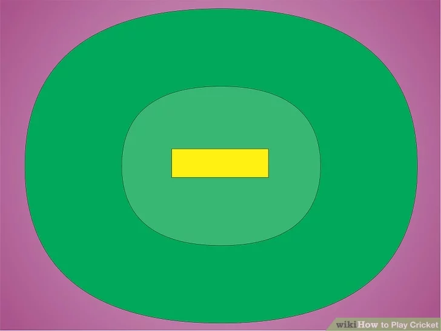
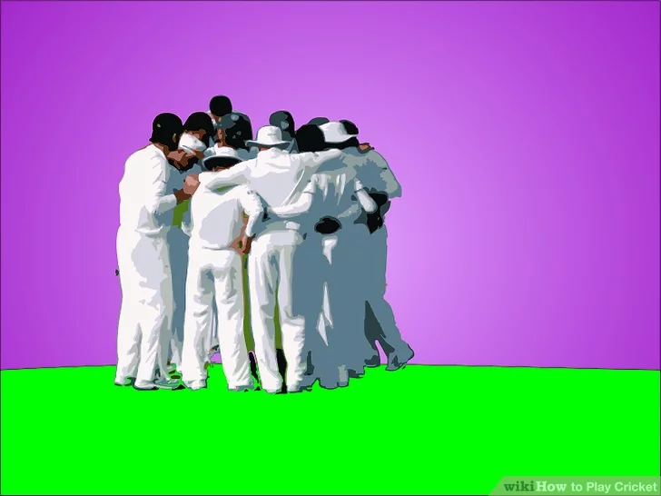
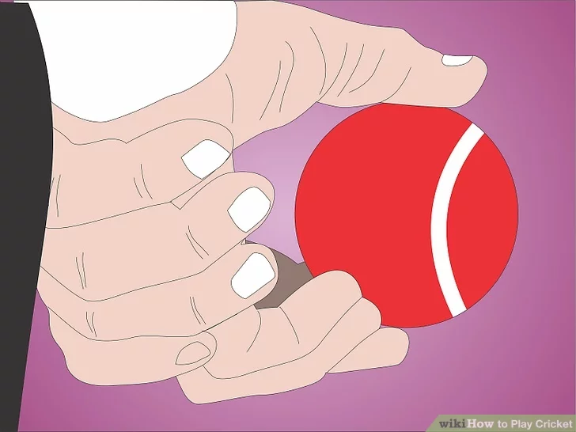
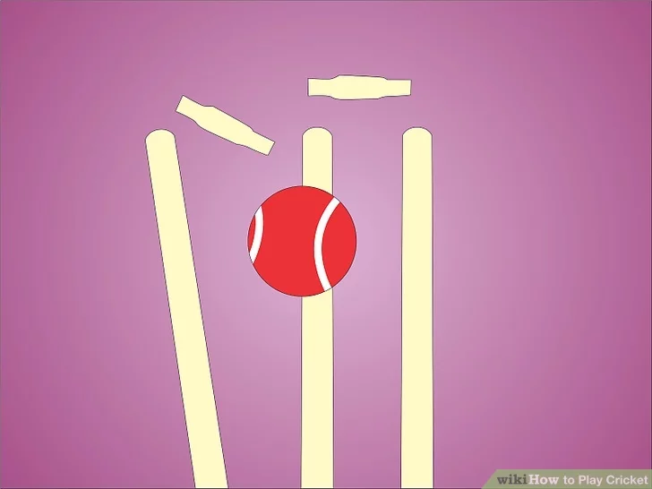
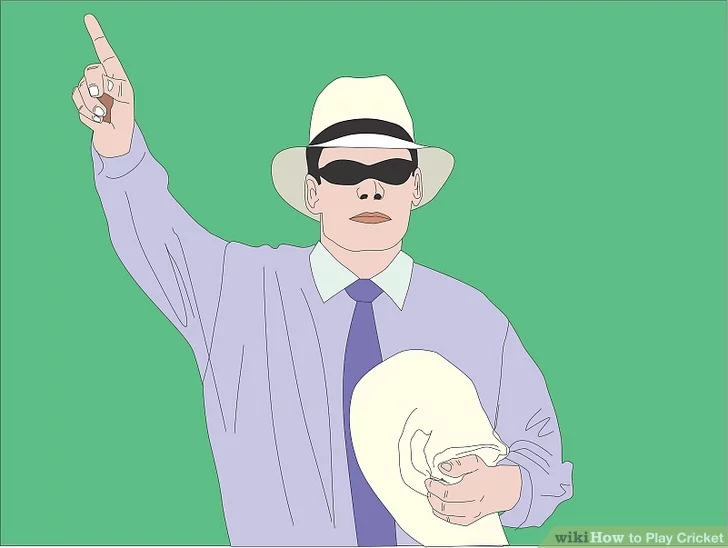
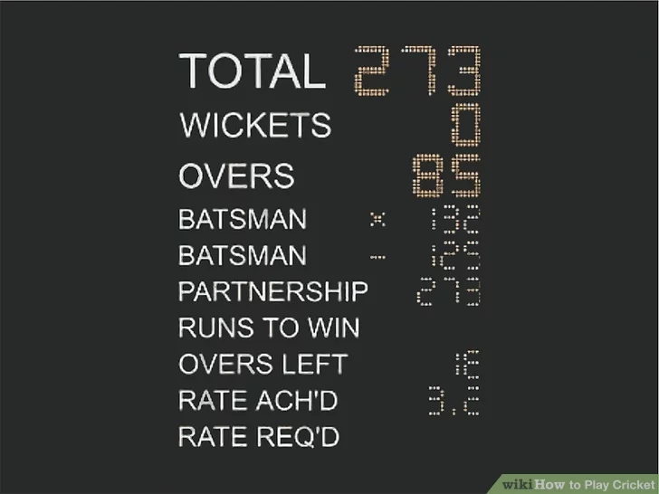
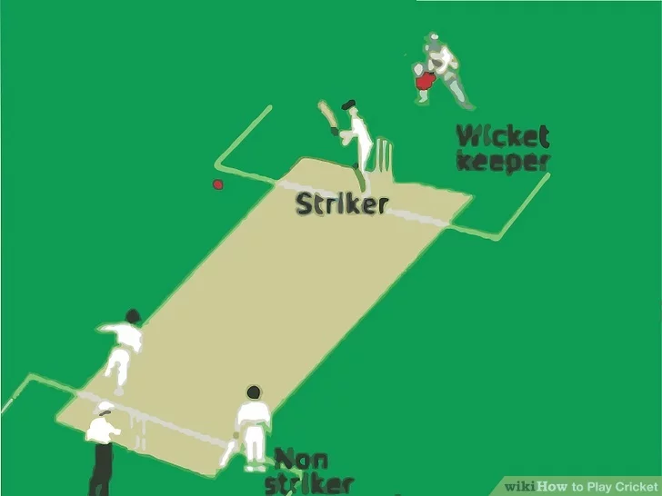
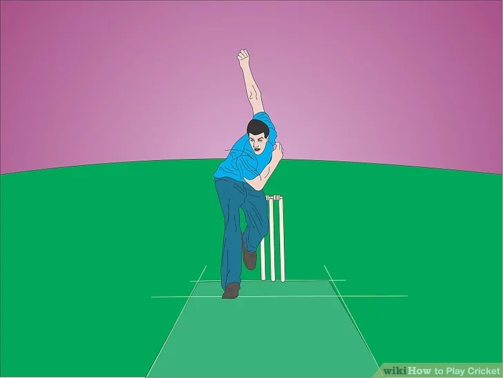
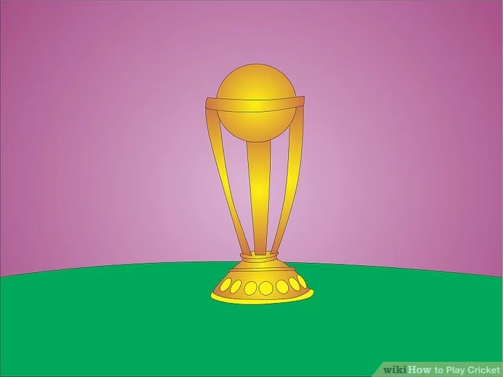

Cricket
HOW TO PLAY?
Cricket is one of the most popular games in the world, with billions of fans in the Indian Subcontinent, the U.K., Australia, New Zealand, and many other countries. Whether you've always wanted to play yourself, or just live somewhere (such as America) where cricket is less common, if you are curious to learn more about it, read the steps below to learn the basics of playing cricket.
Download Instructions
For Saving Instructions Offline Click The Button Below
downloadInstructions
1. Learn about the cricket field

- The pitch is where the bowler (pitcher) bowls the ball to the other team's striker (batter). Regulation play has the pitch at 22 yards (20.1 m) long by 10 feet (3.0 m) wide.
- A cricket field doesn't strictly have to be oval according to the rules, but it usually is.
Cricket is played on a large, oval-shaped field. The field has a rectangular strip in the center, which is called the pitch. A boundary line should be clearly marked all around the outside edge of the field.
2. Set up wickets.

- Wickets should be set 28.5 inches (72.4 cm) high, with a total width of 9 inches (22.9 cm) across the three stumps.
- Wickets are placed so that the center stump of each wicket is in the center of the bowling crease, with the other two stumps equidistant on either side of it along the crease. One wicket is set up on each bowling crease, for a total of two on the pitch. Batsmen (batters) stand in front of their wickets during play.
A wicket is a structure made from 3 stakes, called stumps, driven into the ground, with 2 cross pieces called bails set on grooves between each pair of them (left-center and center-right). In most cases, a batsman whose wicket loses a bail from being struck with the ball, is out, so defending the wickets is an important
part of offensive play.
part of offensive play.
3. Recognize the goal of the game.

- As in most field games, the goal of cricket is to score points, called runs, against the opposing team by running from one point to another before the play can be ended or you're run out by the defenders, who are called the “fielding team.” The team at bat is called the “batting team.
4. Learn the basics of gameplay.

- All of the positions on the pitch have official names. The person who bowls the ball is the bowler, and the batsman who is facing the bowler is called the striker. The other batsman, who stands near the bowler at the far side of the pitch from the striker, is called the non-striker. Finally, the fielding team member who stands behind the wickets at the striker's end of the field is called the wicket-keeper. Other positions in the field have colloquial names, but none are official. .
Each team in cricket is comprised of 11 players (though an alternate twelfth player may be held in reserve in case of injury, but is not otherwise used for anything). At any given time, the fielding team has all 11 players on the field, whereas the batting team has 2, called the batsmen. The batsmen try to hit the ball after it is bowled by the bowler for the fielding team, and then switch positions without getting an out to score runs.
5. Understand the structure.

- Every time the bowler bowls the ball, whether or not it is hit by the striker, a tally is counted. Once a bowler has bowled the ball 6 times in one direction, an “over” is declared. At the over, the bowler must be replaced with a new bowler. Bowlers can't bowl consecutive overs, but they can rotate back in after at least 1 bowl from another bowler, so theoretically 2 bowlers could trade off bowling for the entire innings. When there's an over, the position of the bowler changes from one end of the pitch to the other.
- This also means that the striker can change between overs, depending on which end of the pitch they are on when the over is called. Strikers also change depending on how many runs are completed, since the bowler doesn't change position except at an over. For example, if only 1 run is completed, the striker and non-striker have switched ends of the pitch, making the non-striker the striker for the next bowl.
- Any time a batsman is declared out,they must leave the field and be replaced by a teammate. If the fielding team manages to score 10 outs in an innings, the innings is over, as there are no more batsmen to fill in the second spot on the pitch.
- An innings is a single period of gameplay for the entire batting team. In short forms of cricket, a set number of overs are allowed to each team per innings; once that number is reached, the innings ends even if the fielding team hasn't made 10 outs. In the most prestigious and professional form of cricket, called Test cricket, any number of overs per innings is allowed, meaning that the innings normally only ends once 10 outs are reached. Once an innings ends, the fielding team and batting team switch roles, and the innings for the fielding (now batting) team begins.
- Test cricket games last a maximum of 5 days, and are played 6 hours a day during that time. The shortest commonly played form of cricket, Twenty20, allows 1 innings per team, with a maximum of 20 overs per innings, and typically takes no more than a few hours to complete.
Cricket, much like baseball, uses specialized terms to describe each section of the game. Depending on the length of the game to be played, the number of innings varies between 1 and 2 per team. Each innings (the word “innings” is used both singular and plural) can contain any number of “overs,” which are sets of bowls.
6. Recognize the importance of the wickets

- If the bowler manages to directly hit the striker's wicket on a bowl and break it, the striker is considered out “bowled.”
- f a batsman is outside either popping crease on the pitch, the bowler may break their wicket, either by hitting it with the ball in their hand, or by hitting it with the ball directly. In this case, the batsman is said to have been “run out.”
- Since non-strikers often leave the popping crease as the bowler is about to bowl (in much the same way that baseball players edge away from bases in anticipation of a run to the next base), the bowler can out the non-striker by stopping the bowl and breaking the wicket before he returns to the crease. This is also considered a run out.
- If the striker misses the ball while attempting to hit it, and steps outside the popping crease, the wicket-keeper can break his wicket by catching the bowl cleanly and striking the wicket with the ball, resulting in an out. This type of out is called being “stumped.”
- f the striker intentionally uses any part of their body to block the ball from hitting the wicket, they are out “leg before wicket.” This is usually abbreviated LBW.
- If the striker hits their own wicket by accident and breaks it, they are out “hit wicket.” Hit wicket outs happen no matter what struck the wicket, but only happen if the striker was attempting to hit the ball, or has hit the ball and is attempting to run to the other end of the pitch.
- On the other hand, if the striker has hit the ball and it directly flies into the non-striker's wicket, the non-striker isn't out. The bowler can still pick up the ball and redirect it at the non-striker's wicket to run him out.
Wickets are a central part of cricket. One of the chief ways to out a batsman is to knock 1 or both of the bails off of his wicket with the ball, which is called “breaking” the wicket. There are several conditions under which this will result in an out:
7. Learn the other ways to out a batsman.

- A striker is “caught out” if a member of the fielding team catches it before it hits the ground. This is a very common type of out. If the fielder who catches the ball steps over the boundary line at the edge of the field, though, the batsman scores 6 runs instead. This includes catching the ball out of bounds, and stepping over the line after the catch.
- If a batsman touches the ball with any hand not already holding the bat, they are taken out for “handling the ball,” unless the fielding team has given them permission first. This rule does not apply to getting hit by a bowled ball, or any other kind of accidental touching.
- When a batsman tries to use their bat or body to swat away a ball already in play (usually in defense of their wicket), or interferes with the efforts of the fielding team to get the ball back to the pitch and get an out, they are taken out for “obstructing the field.” However, running so that the batsman's body is between the fielder holding the ball and the batsman's wicket is legal.
- If the striker hits the ball twice on a bowl for any reason except to scoot it away from their wicket, they will be called out. Hitting the ball twice to confound fielders or attempt a better score is strictly forbidden.
- When 1 batsman is called out, if the next batsman doesn't arrive on the field to take their place within 2 minutes, they are considered “timed out.”
-
In addition to the wicket, there are several other ways to out a batsman. Some of them are very common, while others happen rarely, if ever, at higher levels of play. Some of the more technical outs can only be decided by umpires, of which there are always 2 (and sometimes 3) on the field at any given time.
8. Understand extra runs.

- On a call of “no ball” after an illegal bowl, batsmen can only be out by run out, handling the ball, obstructing the field, or hitting the ball twice. Runs scored on a call of “no ball” are considered extra, and every “no ball” a bowler throws must be compensated with another bowl in the same over. Thus, a bowler who bowled “no ball” once would have to bowl a total of 7 times instead of the usual 6 to reach the over. If no runs are scored on a “no ball,” 1 run is added to the batting team's score anyway.
- When a bowler bowls wide, the batting team automatically scores 1 run. As with “no ball” extras, “wide” extras must be made up by the bowler by adding bowls onto their over.
- If the striker tries to hit the ball but misses, and the wicket-keeper doesn't manage to catch it, the batsmen can try to score runs on the play. These runs are called “byes.”
- A “leg bye” occurs when the striker tries to hit the ball with their bat, but hits it with their body instead. “Leg byes” otherwise function identically to “byes.” “Leg byes” can't be taken if the striker wasn't trying to hit the ball.
There are a few conditions under which extra runs can be awarded. These are noted as such for purposes of calculating player averages, but are otherwise identical to any other type of run for the purpose of determining a winner. The 4 types of extra are as follows:
9. Set up the pitch.

- The wicket-keeper crouches behind the striker's wicket and the bowling crease. Their job is to catch the ball should the striker miss or decline to hit the bowl. When the wicket-keeper successfully catches a ball, the striker is normally declared out.
- The other 9 members of the fielding team can stand in any configuration at any time, as long as they stay outside the pitch.
One batsman stands at each end of the pitch, behind the popping crease but ahead of the bowling crease. The bowler also stands at one end of the crease, starting behind the bowling crease, and bowls to the other end. The batsman to whom the bowler bowls is the striker; the batsman at the same end as the bowler is the non-striker.
10. Bowl the ball.

- If the bowler steps past the popping crease during the bowl, the play is called as “no ball” by the umpires. The batsmen can run as though they hit the ball, but can't be out except by a few specific methods.
- Different bowlers have different movement styles, and may rush forward for a fast bowl, or step forward a couple of times and twist for a trickier bowl. The fastest bowls can fly at up to 90 mph (140 km/h), which given the short length of the pitch, requires a very fast response from the striker.
- The bowl must reach the striker at or below the waist. If it's higher, or it sails out past the sides of the pitch, it is called a “wide” ball, or a “no ball,” especially in cases where the ball isn't far from the striker but is too high to hit.
The bowler starts behind the bowling crease, and bowls the ball before reaching the popping crease by moving forward and throwing the ball. A cricket bowl is always performed over-the-shoulder, with a completely straight arm. The ball is allowed to bounce on the pitch once before reaching the striker, though it doesn't have to.
11. Finish the game.

Play according to whatever type of game you've chosen until the appropriate number of innings has been reached. The team with the highest number of runs is the winner.